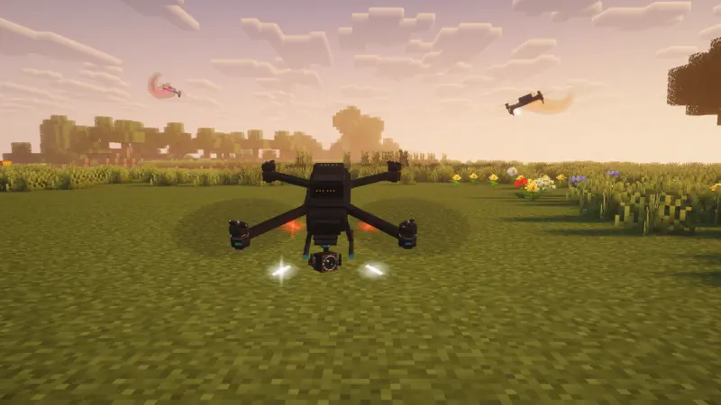
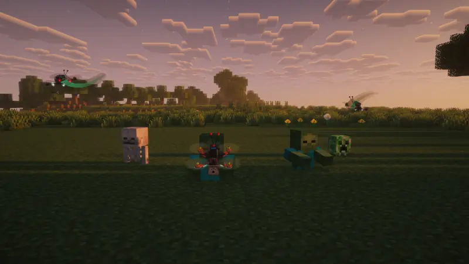

Propwash FPVAdd-ons
Add-ons
Add-ons bring more parts, game modes, accessories and tools to Propwash. This directory lists the official add-ons and, later, community add-ons that were checked against the rules for add-ons. Every add-on here is released and downloads only from CurseForge and Modrinth.
Add-ons bringen mehr Teile, Spielmodi, Zubehör und Werkzeuge zu Propwash. Dieses Verzeichnis führt die offiziellen Add-ons und später Add-ons der Community, die nach den Regeln für Add-ons geprüft sind. Jedes Add-on hier ist erschienen und wird nur von CurseForge und Modrinth geladen.
Play Propwash with others on the community server mc.propwashfpv.com, with Fabric or NeoForge.Spiel Propwash mit anderen auf dem Community-Server mc.propwashfpv.com, mit Fabric oder NeoForge. About the serverZum Server
No add-on of this kind is listed yet.Von dieser Art ist noch kein Add-on eingetragen.
Official add-onsOffizielle Add-ons
-

Propwash: Just More Parts
OfficialOffiziell PartsTeile
Many more realistic parts for Propwash, from 65 mm whoops to 13″ X-Class: frames in new shapes (stretched, squashed, deadcat, H-frame, ducts), motors, props, stacks, cameras and batteries, plus ready-to-fly presets.
Viele weitere realistische Teile für Propwash, vom 65-mm-Whoop bis zur 13-Zoll-X-Class: Rahmen in neuen Formen (Stretched, Squashed, Deadcat, H-Frame, Ducts), Motoren, Props, Stacks, Kameras und Akkus, dazu flugfertige Presets.
- Version
- 1.2.0
- NeedsBraucht
- Propwash 0.6.0 or newerPropwash 0.6.0 oder neuer
- PartsTeile
- 146
- Short idKurzkennung
- 2
-

Propwash: Camera Drones
OfficialOffiziell PartsTeile ToolsWerkzeuge
Camera drones that fly themselves: let go of the sticks and the drone holds its position by GPS. A stabilized 3-axis gimbal, missions on the Flight Planner tablet with waypoints, follow me and point of interest, and a second player as camera operator.
Kameradrohnen, die selbst fliegen: Lass die Knüppel los, und die Drohne hält ihre Position per GPS. Ein stabilisiertes 3-Achsen-Gimbal, Missionen auf dem Tablet Flugplaner mit Wegpunkten, Follow me und Point of Interest und ein zweiter Spieler als Kameramann.
- Version
- 1.0.0
- NeedsBraucht
- Propwash 0.6.0 or newerPropwash 0.6.0 oder neuer
- PartsTeile
- 19
-

Propwash: Mob Defense
OfficialOffiziell AccessoriesZubehör
Three accessories for your drones: a dispenser mount in front that fires arrows, potions, wind charges and TNT, a spear mount below and a rocket booster on top. And the mobs fight back: zombies come closer, skeletons shoot, phantoms hunt.
Drei Zubehörteile für deine Drohnen: vorn eine Dispenser-Halterung, die Pfeile, Tränke, Windkugeln und TNT abfeuert, unten eine Speer-Halterung und oben ein Raketen-Booster. Und die Mobs wehren sich: Zombies kommen näher, Skelette schießen, Phantome jagen.
- Version
- 1.0.0
- NeedsBraucht
- Propwash 0.6.0 or newerPropwash 0.6.0 oder neuer
- PartsTeile
- 3
Community add-onsAdd-ons der Community
CheckedGeprüft Community add-ons are listed after lardtom checked them against the rules for add-ons: their own namespace (the mod id), a name like “X for Propwash”, a license and downloads on CurseForge or Modrinth.Add-ons der Community stehen hier, nachdem lardtom sie nach den Regeln für Add-ons geprüft hat: eigener Namensraum (die Mod-Id), ein Name wie „X for Propwash“, eine Lizenz und Downloads auf CurseForge oder Modrinth.
No community add-on is listed yet. Yours could be the first – see below how to get it listed.Noch ist kein Add-on der Community eingetragen. Deins könnte das erste sein – unten steht, wie du es eintragen lässt.
Get your add-on listedAdd-on eintragen lassen
Your add-on is released on CurseForge or Modrinth and follows the rules for add-ons? Open a ticket on the Propwash Discord or an issue with the template “Add-on listing” in the repository of this website, and send lardtom:
Dein Add-on ist auf CurseForge oder Modrinth erschienen und hält sich an die Regeln für Add-ons? Öffne ein Ticket im Propwash-Discord oder ein Issue mit der Vorlage „Add-on listing“ im Repository dieser Website und schick lardtom:
- the namespace (your mod id) and the nameden Namensraum (deine Mod-Id) und den Namen
- the license and the links to CurseForge and Modrinthdie Lizenz und die Links zu CurseForge und Modrinth
- optionally the short id you would like for share codes (every short id is given only once and never again)optional die Kurzkennung, die du dir für Sharecodes wünschst (jede Kurzkennung wird nur einmal und nie wieder vergeben)
- optionally a web export (/propwash webexport <namespace>), so the configurator can show your partsoptional einen Web-Export (/propwash webexport <namensraum>), damit der Konfigurator deine Teile zeigen kann
Open a ticket on DiscordTicket im Discord öffnen Open an issueIssue öffnen
What you may buildWas du bauen darfst
Add-ons depend on Propwash and use its add-on API, which is MIT licensed; your own code gets your own license. Copying Propwash’s core code or shipping Propwash inside your jar is not allowed. The license in plain words.
Add-ons hängen von Propwash ab und nutzen seine Add-on-API, die unter MIT steht; dein eigener Code bekommt deine eigene Lizenz. Kern-Code von Propwash zu kopieren oder Propwash in dein Jar zu packen, ist nicht erlaubt. Die Lizenz in klaren Worten.
Short ids in share codesKurzkennungen in Sharecodes
A PW3 share code names every add-on it uses. Add-ons of this directory can get a short id, so their codes stay short; every other add-on is written with its full namespace. A short id only works once a Propwash release knows it, so Camera Drones and Mob Defense have none yet and their codes carry the full namespace. The list only grows: a short id is never given again.
Ein PW3-Sharecode nennt jedes Add-on, das er benutzt. Add-ons dieses Verzeichnisses können eine Kurzkennung bekommen, damit ihre Codes kurz bleiben; jedes andere Add-on steht mit seinem vollen Namensraum darin. Eine Kurzkennung wirkt erst, wenn ein Release von Propwash sie kennt, deshalb haben Camera Drones und Mob Defense noch keine, und ihre Codes tragen den vollen Namensraum. Die Liste wächst nur: Eine Kurzkennung wird nie wieder vergeben.
| Short idKurzkennung | NamespaceNamensraum | Add-on | Status |
|---|---|---|---|
| 1 | propwash | Propwash FPV | Propwash itselfPropwash selbst |
| 2 | justmoreparts | Propwash: Just More Parts | listedeingetragen |
Try an add-on in the configuratorEin Add-on im Konfigurator ausprobieren
The configurator shows the parts of the official add-ons. Any other add-on with parts in data files you can open there as a jar file: your browser reads it only locally, nothing is uploaded or stored, and after a reload it is gone.
Der Konfigurator zeigt die Teile der offiziellen Add-ons. Jedes andere Add-on mit Teilen in Datendateien kannst du dort als Jar-Datei öffnen: Dein Browser liest sie nur lokal, nichts wird hochgeladen oder gespeichert, und nach dem Neuladen ist sie weg.